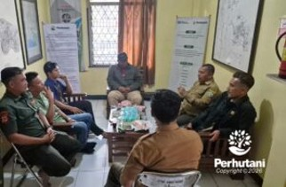

TASIKMALAYA, PERHUTANI (15/01/2026) | Perum Perhutani Kesatuan Pemangkuan Hutan (KPH) Tasikmalaya menggelar pembahasan pengembangan wisata Curug Badak Hanoman bersama Lembaga Masyarakat Desa Hutan Kahuripan, bertempat di Kantor BKPH Tasikmalaya, Selasa (13/01). Kegiatan ini merupakan bagian dari langkah strategis Perhutani dalam mendorong optimalisasi potensi wisata alam berbasis kehutanan sosial yang berkelanjutan.
Curug Badak Hanoman berlokasi di Desa Sukasetia, Kecamatan Cisayong, dan berada dalam kawasan kerja Perhutani yang memiliki potensi wisata alam unggulan dengan daya tarik air terjun serta bentang alam hutan yang masih alami. Pembahasan difokuskan pada penataan kawasan wisata, peningkatan sarana dan prasarana pendukung, serta penguatan tata kelola kelembagaan LMDH agar pengelolaan wisata dapat berjalan profesional, tertib, dan sesuai dengan ketentuan peraturan perundang-undangan.
Hadir dalam kegiatan tersebut Wakil Administratur/KSKPH Tasikmalaya, Rodiana Rahman, didampingi Tim Pengembangan Bisnis KPH Tasikmalaya, Asisten Perhutani/KBKPH Tasikmalaya beserta jajaran, serta Ketua Lembaga Masyarakat Desa Hutan Kahuripan, Agus Wawan, bersama para anggota.
Dalam kesempatan tersebut, Wakil Administratur/KSKPH Tasikmalaya, Rodiana Rahman, menyampaikan bahwa Perhutani pada prinsipnya terbuka dan siap mendukung pengembangan wisata Curug Badak Hanoman, sepanjang dilaksanakan sesuai dengan ketentuan yang berlaku. “Pengembangan wisata ini harus dikelola secara kolaboratif, terencana, dan tetap mengedepankan fungsi kelestarian hutan. Perhutani mendorong agar LMDH dapat berperan aktif sebagai pengelola, namun tetap taat pada regulasi dan prinsip keberlanjutan,” ujarnya.
Sementara itu, Ketua LMDH Kahuripan, Agus Wawan, menyampaikan apresiasi atas pendampingan dan ruang diskusi yang diberikan oleh Perhutani. “Kami siap bersinergi dan berkomitmen untuk mengelola wisata Curug Badak Hanoman secara bertanggung jawab. Harapannya, pengembangan wisata ini tidak hanya menjaga kelestarian hutan, tetapi juga mampu meningkatkan kesejahteraan masyarakat desa hutan,” ungkapnya.
Melalui kegiatan pembahasan ini, Perum Perhutani KPH Tasikmalaya berharap terbangun kesamaan persepsi dan komitmen bersama antara Perhutani dan LMDH dalam pengembangan wisata alam. Sinergi tersebut diharapkan dapat menjadikan Curug Badak Hanoman sebagai destinasi wisata yang berdaya saing, berbasis partisipasi masyarakat, dan berkelanjutan.
Editor: WK
Copyright © 2026 Warta Nusantara Barat